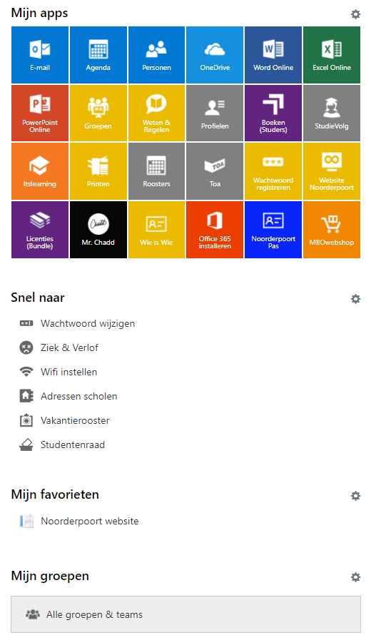

Ga naar Noorderportal en log in. Wanneer je op de hoofdpagina bent zie je verschillende dingen. Aan de bovenkant zie je de laatste actueel nieuws. Aan de rechter kant zie je informatie zoals mijn cijfers en meldingen In het midden van de pagine zie je Mijn apps. Hier vind je allerlij belangrijke tegels zoals Roosters, Toa, ItsLearning en veel meer.

Om de tegels die je ziet te veranderen klik je op de tandwiel rechts boven alle tegels. Vervolgens tik je de tegels aan die je wilt hebben of die je wilt weghalen. Onder mijn apps zie je Snel naar. Hier staan belangrijke linkjes zoals je wachtwoord wijzigen, je ziek melden en het vakantierooster.